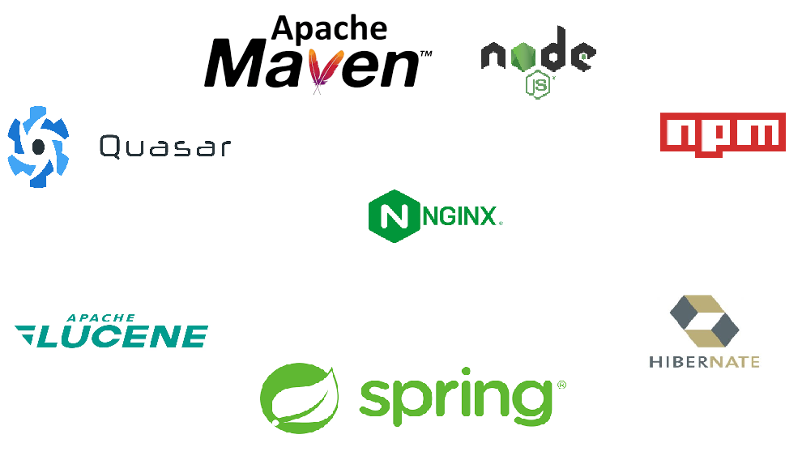
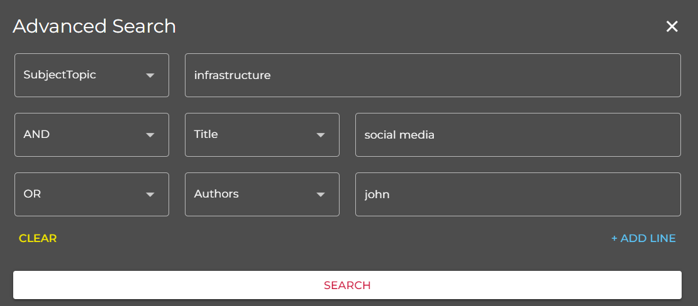
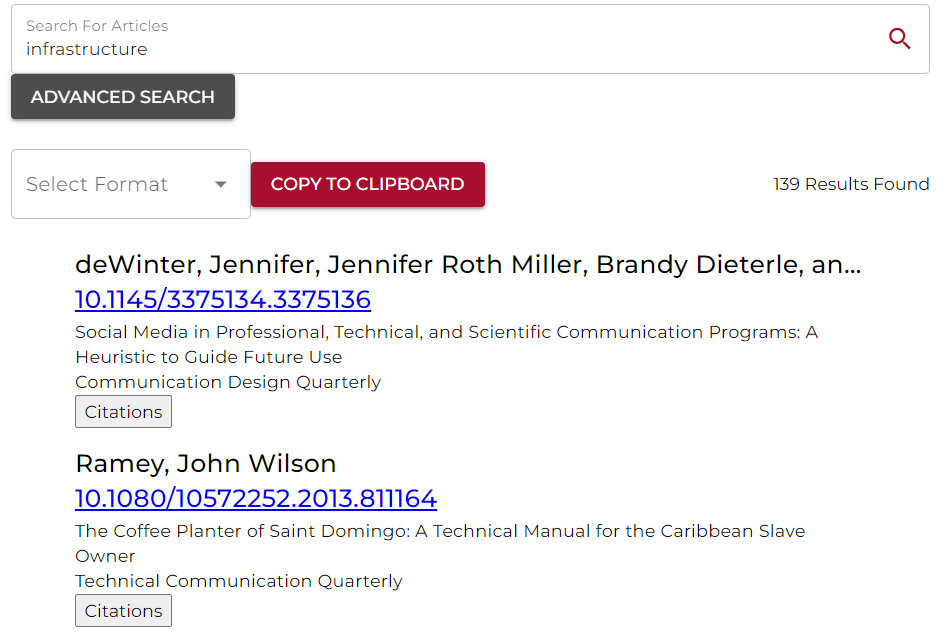

Technical Communication Search Repository
Senior Capstone project to build a search app for English students to search through technical communication articles.
Project Details / Background
This is a Capstone project for building a search app for English students at various universities to search
for Technical Communication articles for their research. The project's sponsor, Avon Murphy, is a prolific Technical Communication
researcher himself and collaborated with WSUV to have two CS Capstone teams build this app.
The first year's team had built the framework of the app and laid the foundation of the tech stack
needed for the front end and back end. My team then took on this project and first had to read through and understand
how the project worked based off of the code and documentation left behind. Aferwards we had begun development and finished
the app working closely with our sponsor Avon to make sure the app worked and suited the needs of our target audience.
My team and I managed to deploy the app onto WSUV servers working with the IT admin on campus which allowed
all students/faculty to use the app while on the network. Individually, I was responsible for the backend handling of the database
and functionality of searching for articles. The project's database comes from hand picked articles from our sponsor and we build
these entries into a database for indexing and searching using Apache Lucene and Hibernate.
Now I am currently working on this project as an independent contractor. Feel free to check out the site for yourself at https://tcbib.org
Image Gallery

Tech stack of the project.

The advanced search, users can add up to 8 query lines and apply boolean
logic operators between them.

Screenshot of some results, the results display the Author(s), DOI link, title, and subject(s).
You can also click to copy all of the search results into one of the following citation formats: MLA, Chicago, IEEE, APA.
Or you can view all of the citations and subjects for individual articles.